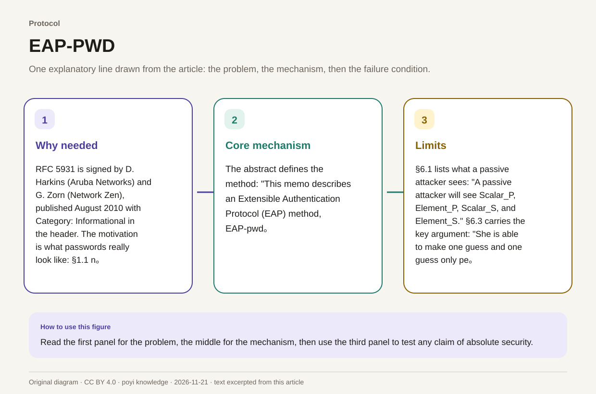
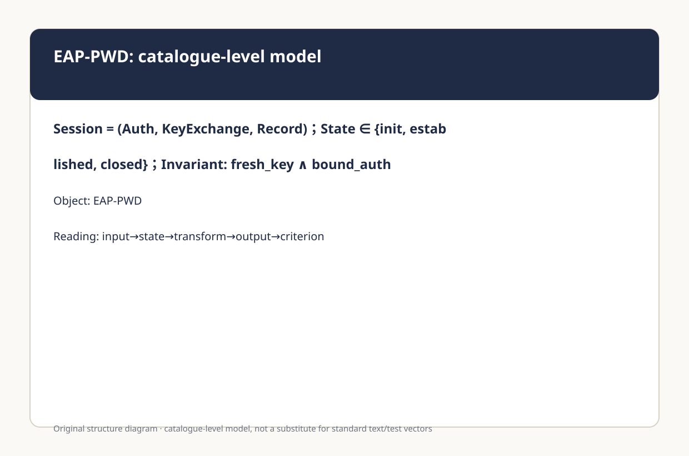

Principles
Protocol: EAP-PWD (EAP-PWD). The abstract defines the method: "This memo describes an Extensible Authentication Protocol (EAP) method, EAP-pwd, which uses a shared password for authentication." and asserts strength — "The underlying key exchange is resistant to active attack, passive attack, and dictionary attack." §2.8.2 gives the shape: "EAP-pwd defines three message exchanges: an Identity exchange, a Commit exchange, and a Confirm exchange." §2.8.3 names the central value: the peers use each other's identities and the agreed ciphersuite to "fix an element in the negotiated group called the Password Element", and "From the point of view of an attacker who does not know the password, the Password Element will be a random element in the negotiated group."

Why it matters
RFC 5931 is signed by D. Harkins (Aruba Networks) and G. Zorn (Network Zen), published August 2010 with Category: Informational in the header. The motivation is what passwords really look like: §1.1 notes "Typically these passwords are not stored on a user's computer for security reasons and must be entered each time the human desires network access." and admits the entropy problem — "They will likely not possess high-entropy, and it may be assumed that an adversary with access to a dictionary will have the ability to guess a user's password." The same section traces the lineage to "This problem was first described by Bellovin and Merritt in [BM92] and [BM93]." §1.3 sets the bar for the problem area: any protocol claiming to solve password-authenticated key exchange "must be resistant to active, passive, and dictionary attack and have the quality of forward secrecy."
Applications
§2.8.2 says what the Commit exchange achieves: "the peer and server exchange information to generate a shared key and also to bind each other to a particular guess of the password." §2.10 sets the interoperability floor — "compliant EAP-pwd implementations SHALL support the following parameters" — including "Diffie-Hellman Group: group 19 defined in [RFC5114]" and "PRF: HMAC-SHA256 defined in [RFC4634]". §7 states the security claims RFC 3748 requires of new EAP methods: the mechanism is "mechanism: password." and the claims include "mutual authentication: the peer and server both authenticate each other by proving possession of a shared password." The same section makes dictionary-attack resistance a RFC 4017 mandate, since "The advantage gained by an attacker is through interaction not through computation."

Limits & attacks
§6.1 lists what a passive attacker sees: "A passive attacker will see Scalar_P, Element_P, Scalar_S, and Element_S." §6.3 carries the key argument: "She is able to make one guess and one guess only per attack." and locates the advantage — "is solely through interaction with an honest protocol peer." §6.4 shows why forward secrecy holds: even if the password later leaks, the earlier runs' random values stay unknown, so "This is the definition of Forward Secrecy." §6.5 concedes that strength is bounded by the group: "The mandatory-to-implement group defined in this memo is group 19", chosen because "This group was chosen because the current best estimate of a symmetric key derived using this group is 128 bits".
History
RFC 8146 is signed by D. Harkins (HP Enterprise), published April 2017 with Category: Informational and an “Updates: 5931” header line, i.e. it adds to the method defined in RFC 5931. The abstract states the gap: EAP-pwd had it "it does not include support for salted passwords." and gives the motive — "There are many existing databases of salted passwords, and it is desirable to allow their use with EAP-pwd." The same paragraph records what the original already covered: raw keys and "double hashing of a password in the style of Microsoft Challenge Handshake Authentication Protocol version 2 (MSCHAPv2)".
Worked example & verification
Formal model and reproduction steps
[\mathrm{Adv}^{\Pi}_A(\lambda)\le n\cdot\mathrm{Adv}^{\mathrm{prf}}F(\lambda)+\varepsilon{\mathrm{aead}}(\lambda)]
EAP-PWD: the registered public parameters, key material or randomness, and message are mapped through the stated transformation to an output checked against the registered criterion. The worked example is a structural reproduction, not a new test vector; parameter ranges, standard versions and implementation details remain source-bound.
References
- Wikipedia search entry for EAP-PWD. https://zh.wikipedia.org/w/index.php?search=EAP-PWD
- Handbook of Applied Cryptography (Menezes, van Oorschot, Vanstone). https://www.cacr.math.uwaterloo.ca/hac/